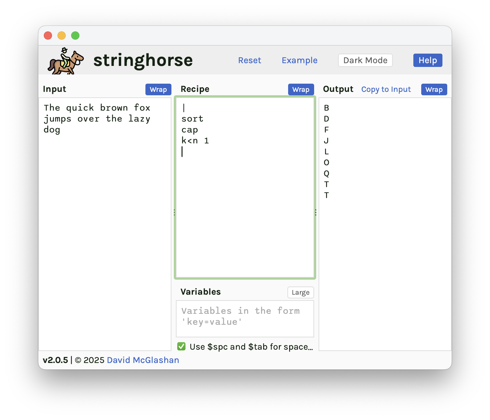
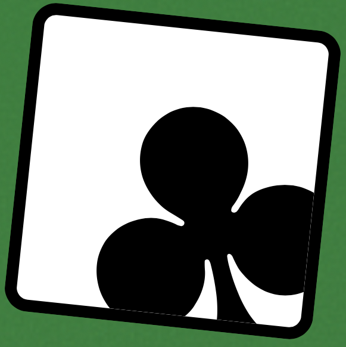

I am colour blind, and this amuses people.
Not sure if protan or deutan …
I am red-green colourblind. See the world as I do with this handy tool. Choose a colour from the list and I'll point to a corresponding area of colour on the gamut. Simple.
Intellectually, I know that blue gives way to red via purple along the straight edge at the bottom of the gamut. But my eyes and brain simply wouldn't register those colours out of context
"Mystery" is a murky orange-brown with enough blue to be grey/purple/pink. I'm not confident enough to give it a better label than that.
Life is an adventure …

I made Astrarisk.js
Formerly an iOS game, now available in Web browsers everywhere.
A long, long time ago, I made a game for iOS called Astrarisk. This would have been in early 2010 when the device du jour was the iPhone 3GS, however the game itself was based on an even earlier program from the times when computer magazines printed the BASIC source code for you to type in and run. The gimmick behind Astrarisk was that it fit into one line of BBC BASIC on the old Model B.
It was the source of much enjoyment at college in the early 1990s when we had accounts on the RM Nimbus machines which had excellent BBC BASIC emulators. In 1996, now at university, I made a version out of Java applets for some early version of Netscape on the HP-UX workstations there.
The version presented here is (at least) the fourth version I've written. The original author, and all prior versions by me, are lost to the mists of time, though I may have the iOS source code on an old backup drive somewhere …
It had a pretty epic green icon, as you can see:
Nowadays you can play it right here on the web (opens a wee popup window) and if you're curious, the source code is on Github.
The iOS version was priced at 79p, the lowest tier Apple provided in 2010. It made no money so eventually I made it free to buy. After a few months, all of a sudden, it had 11,000 downloads from Japan in one weekend and got to #2 in Games on the Japanese App Store before returning to zero-daily-download obscurity. I've no idea why. I suppose somewhere it picked up a mention or a recommendation and this brief, unsolicitied exposure was enough to catapult it up the charts.

Various Horses
Useful tools for work done as webapps.
I frequently find myself running into the same class of text manipulation problem both at work and when doing computer stuff in my spare time. Given an arbitrary text source, how do I quickly sort it? Or extract the bits I'm interested in? Or turn a list of Jira ticket IDs into hyperlinks I can click on?
On a POSIX system one would naturally tend to solving these problems with tools like sed, awk, and grep, or with Perl or Python, and regular expressions. But when I'm already quite deep in a separate problem the last thing I want is more windows on the desktop. I'm already working, I don't need more clutter, so stringhorse runs in a browser tab. I paste in the source, quickly build the recipe, and see the output in real time.

There are three horses in the ... ahem ... stable:
- Stringhorse for text manipulation
- CSVhorse for creating CSV files quickly from scratch
- Shothorse for drawing boxes and arrows on screenshots

Card Games
Solitaire and other distractions.
For the amusement of no one but myself, I write the occasional card game in Javascript. You can play them online at cardgames.mcglashan.net.